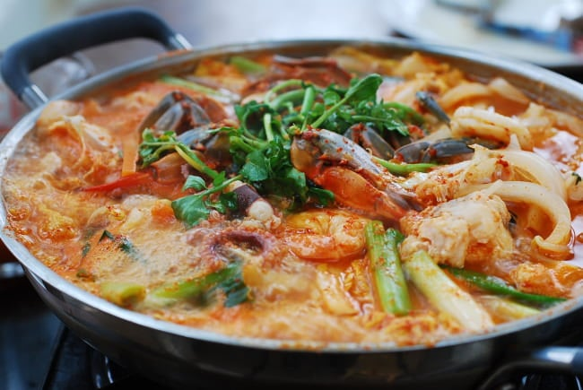

Spicy Seafood seafood hotpot

Description
Spicy and flavourful Hot Pot.
Takes 40 minutes in total for cooking and prep.
Serves 4 people.
Ingredients
Solid contents
- 8 mussels
- 2 blue crabs
- 8 ounces of squid or octopus
- 8 ounces white fish like tilapia
- 8 large shrimp (shell on)
- 6 ounces of soybean sprouts
- 8 ounces napa cabbage
- 8 ounces of napa cabbage (the innermost parts)
- 3 ounces of Korean radish
- 1 medium carrot
- 1/2 medium onion
- 3 mushroom caps
- 2 scallions
- 2 ounces of watercress
Broth
Seasoning
- 3 tbsp of gochugaru
- 1 tbsp soup soy sauce or fish sauce
- 1 tsp salt
- 1/4 tsp pepper
- 1 tsp gochujang
- 1 tsp doenjang
- 1 tbsp minced garlic
- 1 tsp grated ginger
Preparation directions
- Scrub the mussles and place them in salted water for 30 minutes to eject any sand.
- Serparate the top shells from the crabs and cut out the gills. Clean the shells with a spare toothbrush. Break/cut the bodies into halves.
- Clean the squid and fish, cut into bite size pieces.
- Clean the shrimp.
- Cut the cabbage, onion, mushrooms, radish, and carrot into thin, bite-size pieces.
- Mix all seasoning ingredients together with 3 tbsp of broth.
- Using a shallow pot, arrange all vegetables except the watercress in neat clusters and scatter the seafood pieces on top with the mussels at the bottom.
- Add 3 cups of broth and all the seasoning paste and top with the watercress.
- Cook over medium high heat until the mussels are open, the fish is cooked, and the vegetables are soft. Drizzle with the lemon juice.
Go Back Home
🍲୨୧°˖ . ݁˖︵‿ ୨୧ ‿︵˖ . ݁˖°୨୧🍲
🍲୨୧°˖ . ݁˖︵‿ ୨୧ ‿︵˖ . ݁˖°୨୧🍲
🍲୨୧°˖ . ݁˖︵‿ ୨୧ ‿︵˖ . ݁˖°୨୧🍲
🍲୨୧°˖ . ݁˖︵‿ ୨୧ ‿︵˖ . ݁˖°୨୧🍲